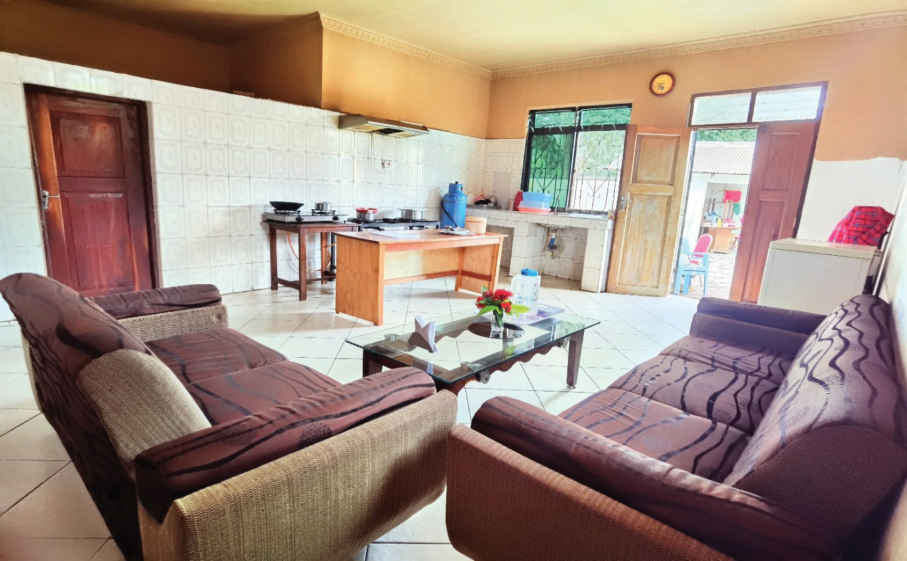

Separate kitchen
This type of kitchen can be built within the main house (enclosed) or outside the main house (isolated). A separate kitchen always gives privacy during meal preparation and prevents heat, steam and smoke from infiltrating into the house. Separate kitchens provide a more traditional and functional set up, ideal for those who prefer a clear division between cooking and living spaces. Figure 3.3 shows an enclosed type of kitchen.
29